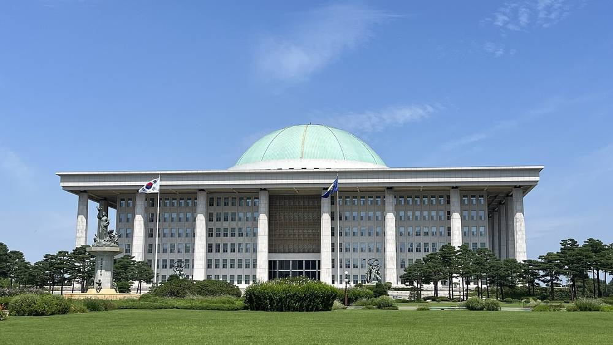

송·변전사업 104건 중 기한 내 준공 19건…주민 지원 늘리는 시행령 개정안 12월 1일까지 입법예고

국회 토론회서 은재호 교수 적시성·절차적 정당성·공간적 정의 충돌 짚어…정부 개정안은 지원금 3분의 2를 주변 마을에 배분
11월 9일 국회 '전력망 확충 갈등관리 대토론회' 자료에 따르면 제7~10차 전력수급기본계획의 주요 송·변전사업 104건 가운데 기한 안에 준공된 것은 19건이다. 68건은 아직 끝나지 않았고 나머지 17건은 준공 목표 시점이 오지 않았다(발전설비는 4~5년이면 짓지만 송전선로와 변전소는 10년 넘게 걸린다). 이철규 국민의힘 의원은 국가적 편익이 특정 지역의 일방적 부담이 돼선 안 된다며 합리적인 이익공유 방안과 주민 참여·안전성 검증 제도가 필요하다고 말했다.
은재호 한국외대 교수는 적시성·절차적 정당성·공간적 정의(지역 간 부담을 고르게 나누는 일)의 충돌을 짚고 계획 초기부터 주민 참여를 보장하라고 제안했다. 신고창변전소 유치를 결정한 전북 고창 성송면의 주민대표 성경찬 씨는 1MW 이하로 제한된 우선 접속 제도를 넓혀 달라고 요청했다.
기후에너지환경부는 10월 21일 시행령 개정안에 지자체 지원금(가공선로 1km당 20억 원)의 3분의 2 이내를 송·변전설비 주변지역에 배분하는 기준을 담았다. 이 개정안의 입법예고는 12월 1일까지 이어진다.
뉴스 바로 읽기
본지가 공개 자료와 본지 보도로 확인한 사실만 덧붙입니다
개정안은 주변지역 주민이 협동조합을 세워 1MW 이하 재생에너지 사업을 하면 지자체가 지원금을 신청할 때 설치비용을 우선 반영하도록 하고, 지원 대상 설비 기준을 10MW 미만에서 1MW 이하로 조정한다. 입지선정위원회 구성 전 주민 설명회는 2차례에서 3차례로 늘리고, 주민이 서면으로 낸 대안 경과지·부지는 위원회가 심의해 후보로 정할 수 있게 한다. 개정안 주요내용은 정책브리핑(korea.kr)에 올라온 기후에너지환경부 10월 21일 보도자료의 붙임에서 볼 수 있다.
출처: 뉴스핌 2026-11-10 이형섭 원문 보기
출처: 기후에너지환경부 2026-10-21 송전망 주변마을의 햇빛소득을 지원하고, 입지선정 과정의 주민참여를 넓힌다(보도자료)(전력망 10.21) 원문 보기